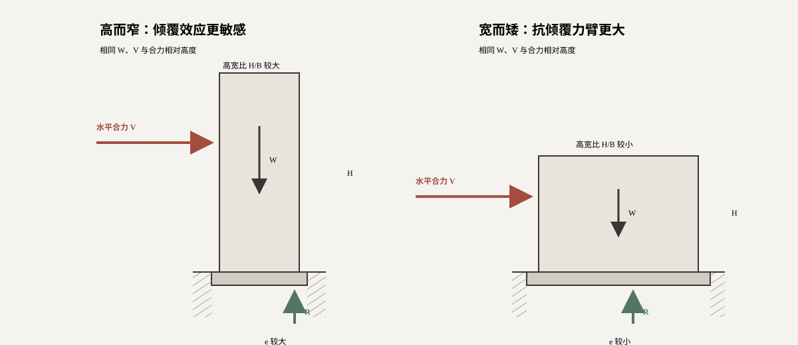

倾覆力矩随作用高度增加
水平合力 V 乘以合力作用高度 得到倾覆力矩。楼层力分布改变时，即使基底剪力不变，合力高度和倾覆力矩也会改变。
SLENDERNESS · OVERTURNING LAB
建筑越高，水平力的倾覆力臂通常越大；支承越窄，重力能够提供的稳定力臂越小。高宽比把这两种几何影响放在一起，是方案阶段判断整体抗倾覆敏感性的直观指标。
核心概念 / 01
在重量、水平合力及其相对作用高度相同的条件下，增加高度会放大倾覆力矩，增加支承宽度则会扩大稳定力矩。

水平合力 V 乘以合力作用高度 得到倾覆力矩。楼层力分布改变时，即使基底剪力不变，合力高度和倾覆力矩也会改变。
对矩形支承范围，重力 W 到倾覆边缘的最大力臂为 B/2，因此理想稳定力矩为 WB/2。
由 M = We 可得 e = M/W。e/B 较小时基底全接触；继续增大后，部分区域可能脱开，直至无法仅靠重力维持平衡。
H/B 描述形体，e/B 才直接反映当前荷载下的抗倾覆状态。同样的高宽比，重量、水平力或合力高度不同，结果也会不同。
交互实验 / 02
下列参数由三个实验共享。红色表示水平作用，绿色表示竖向反力与基底压力；模型按单位进深计算。
水平作用产生 M，重力使竖向反力相对支承中心偏移 e。图中 R 与 W 大小相等、方向相反。
e/B ≤ 1/6 时按梯形压力分布；超过 1/6 后，本模型转为部分接触三角形分布，接触宽度随偏心增大而缩小。
符号与单位：c 为预设合力相对高度，H̄ = cH；a 为实际接触宽度（m）；qmax、qmin 为单位进深基底最大、最小线压力（kN/m），W/B 表示把竖向合力 W（kN）分摊到支承宽度 B（m）。压力图面积等于 W，压力合力作用点与竖向反力位置一致。
适用边界：e/B ≤ 1/6 使用全接触梯形公式，等号时 qmin = 0；1/6 < e/B < 1/2 使用部分接触三角形公式。e/B = 1/2 时 a → 0，不能代入 qmax = 2W/a；e/B > 1/2 时合力越出支承范围，本模型失效。均假定基底只承压、材料不变形且不计锚固。
由 H̄ = cH 和 e = VH̄/W，可得 e/B = (Vc/W)(H/B)。在当前荷载下，偏心比与高宽比成正比。
模型说明：采用刚性矩形基底、竖向合力与地基压力线性分布的简化假定。1/6 与 1/2 用于解释几何界限，不代表任何具体工程的完整验算结论。本节与上一节是不同简化程度的独立教学算例：0.50／0.65／0.70 为预设合力相对高度 c，不由上一节层数、层高和荷载参数自动同步计算。
学习完成：高宽比决定整体几何敏感性，e/B 则把这一敏感性与具体荷载、重量和基底接触状态联系起来。